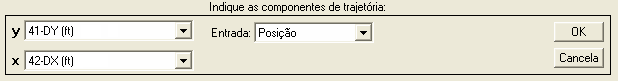
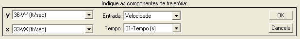
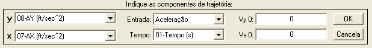
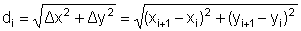
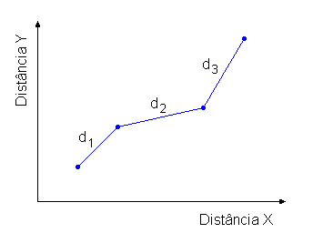
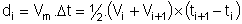
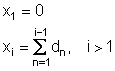
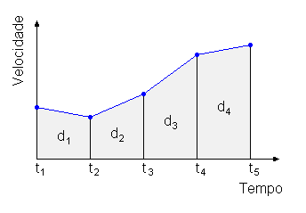
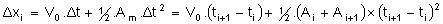

|
Menu Funções |
|
Integração
de Trajetória
Essa função
permite integrar as componentes cartesianas de
posição, velocidade, aceleração ou coordenadas geográficas de forma a
obter o
deslocamento horizontal ao longo da trajetória.
Clique no menu “Funções ►
Integração de trajetória” ou clique no botão na
Barra de Ferramentas.
A Caixa de
Diálogo solicitará que o usuário indique os
parâmetros para a operação:



● No campo
“Entrada”, indique o tipo de parâmetros que
serão usados como dados de entrada. As opções são “Posição”,
“Velocidade”,
“Aceleração” e “Latitude/Longitude”.
● Nos campos
“x” e “y”, indique os parâmetros de
entrada desejados, conforme a seleção do campo “Entrada”. Para os três
primeiros tipos de entrada, os parâmetros devem estar no sistema
terrestre para
a correta integração (não há necessidade de serem especificamente os
eixos
Norte e Leste). Para entradas do tipo Latitude/Longitude, as
coordenadas devem
estar no sistema WGS-84.
● Caso a
seleção do campo “Entrada” seja velocidade ou
aceleração, o campo “Tempo” será habilitado. Selecione um parâmetro de
tempo
adequado (monotônico crescente e sem pontos inválidos) para integração
dos
parâmetros de entrada.
● Caso a
seleção do campo “Entrada” seja aceleração,
os campos “Vy
|
Nota: Para a
correta integração, as unidades dos parâmetros integrados devem ser
compatíveis com a unidade de tempo (por exemplo, velocidade em pés por segundo
e tempo em segundos). |
|
Nota: A unidade do
deslocamento será compatível com as unidades dos parâmetros integrados
(por exemplo, velocidade em pés por segundo resulta
em deslocamento em pés). |
|
Nota: Certifique-se
que os parâmetros de entrada não contenham ruído, pois nesse caso a
integração fornecerá resultados incoerentes, com deslocamento maior que
o esperado para entradas do tipo Posição e Latitude/Longitude. |
Ao pressionar
“OK”, o R_DAT analisará os parâmetros de
entrada.
- Caso o tempo não
seja adequado, a operação não poderá ser realizada.
- Caso os parâmetro
x e y contenham pontos inválidos (NaN),
o R_DAT
solicitará que o usuário informe como proceder a integração:
As opções são:
|
Opção |
Descrição |
|
Interpolar |
Interpola
linearmente os pontos inválidos e prossegue a operação. |
|
Repetir |
Repete o ponto
válido anterior e prossegue a operação. |
|
Cancelar |
Cancela a
operação. |
Ao prosseguir
na operação, o R_DAT realizará a integração e
apresentará temporariamente o resultado no gráfico principal. Para
confirmar, dê
um nome adequado ao novo parâmetro na Caixa de Diálogo e clique “OK”.
Para
cancelar e descartar o novo parâmetro, clique “Cancela”.

Após definir o
nome e pressionar “OK”, o novo parâmetro será
acrescentado às matrizes de trabalho antes do parâmetro “No.OBS.”.
Lógica de Operação
1° Caso: Posição
Dado um par de
parâmetros DX e DY, que expressam as
distâncias no sistema terrestre com relação a um ponto fixo no solo, o
deslocamento será dado pela soma cumulativa das distâncias relativas ponto-a-ponto, iniciando com
zero. O deslocamento em cada
intervalo é a distância entre os dois pontos adjacentes, ou seja, por
Pitágoras:


2° Caso:
Velocidade
Dado um par de
parâmetros VX e VY, que expressam as velocidades
inerciais no sistema terrestre e um parâmetro de tempo, o deslocamento
será
calculado em dois passos. Primeiro, as velocidades em cada eixo serão
integradas no tempo, fornecendo as distâncias com relação ao ponto
inicial (0,
0). Depois, o deslocamento será calculado como no 1° Caso.
A integração
das velocidades é realizada pelo método
trapezoidal (integração por área), ou seja:



3° Caso:
Aceleração
Dado um par de
parâmetros AX e AY, que expressam as
acelerações inerciais no sistema terrestre e um parâmetro de tempo, o
deslocamento será calculado em dois passos. Primeiro, as acelerações em
cada
eixo serão integradas duplamente no tempo, fornecendo as distâncias com
relação
ao ponto inicial (0, 0). Depois, o deslocamento será calculado como no
1° Caso.
A integração
das acelerações é realizada pelo método
trapezoidal duplo (integração por área), ou seja:

4° Caso:
Latitude/Longitude
Os parâmetros
de latitude e longitude são inicialmente
convertidos para distâncias nos eixos Norte e Leste
verdadeiros com relação ao ponto médio da trajetória e a
operação é
realizada conforme o 1º Caso.
|
|
Conversão
de sistemas |
Obtenção
de
curso |
|